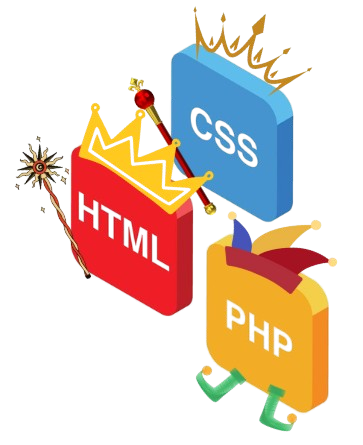

Programmation en C, C++ et C# : Création d’algorithmes relativement complexes,
comme un programme en C de jeux a tour par tour basé sur le pierre feuille ciseaux et un puissance 4 en C# en développement
→ Niveau : 85 %
Bases de données en SQL : Création et gestion de bases de données,
comme pour un projet de gestion de location de Jet-skis incluant le suivi des stocks et des fournisseurs.
→ Niveau : 80 %
Développement web : Conception de pages web en HTML, CSS et PHP.
J’ai réalisé un site personnel pour me présenter en mettant en œuvre ces technologies.
→ Niveau : 75 %
